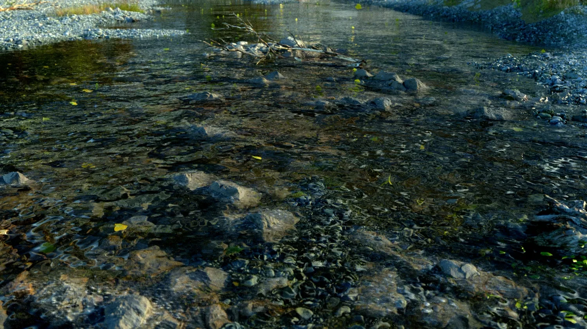

Calder Moore氏が、Octane for Cinema 4Dで夕暮れの川のシーンを作る約3.5時間の動画チュートリアルをGumroadで販売（CA$20）。濡れた川底と水のシェーダー、落ち葉や岩・流木に溜まった葉のスキャッター、霧による奥行き、最後のPhotoshop仕上げまでを一通り解説しており、最終レンダリングとPSDも付属する。
Creating Rivers Using Octane and Cinema 4D（Gumroad、CA$20）
https://caldermoore.gumroad.com/l/Wxufj?layout=profile
プロモーション動画（YouTube）
https://youtu.be/PpnIxE7BuVI
Calder Moore氏のArtStation
https://www.artstation.com/refriedspinach